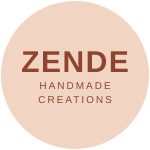
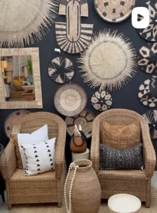
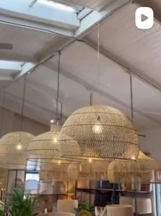
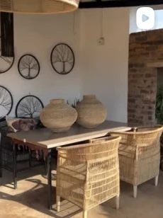
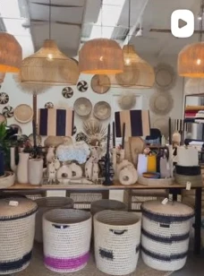

Piggly Wiggly
R103, Midlands Meander, KwaZulu-Natal
View retail directory
ZendeHandmade CreationsWOMAN-LED CRAFT · KWAZULU-NATAL
Woven chairs for slow afternoons, lighting that warms a room, and handmade details you’ll want to live with.
Shop the collection


THE ZENDE COLLECTION

THE MAKER BEHIND ZENDE
Jabu founded Zende Handmade Creations, a woman-run KwaZulu-Natal business that brings together the work of local makers. Her collection spans woven seating and lighting, baskets, macramé and accessories.
Jabu has also shared her love of craft through crochet workshops. Follow Zende for future workshops, new pieces and market appearances.
Follow Zende on InstagramSEE THE WEAVE UP CLOSE
R103, Midlands Meander, KwaZulu-Natal
View retail directoryShongweni, KwaZulu-Natal
See the Westown featureAsk Jabu about current stock, workshop dates or a visit.
Enquire on WhatsApp